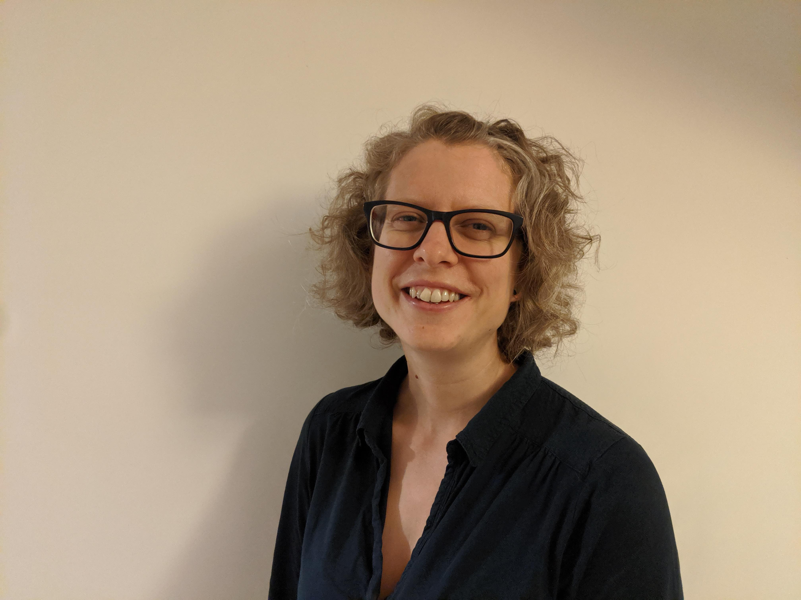
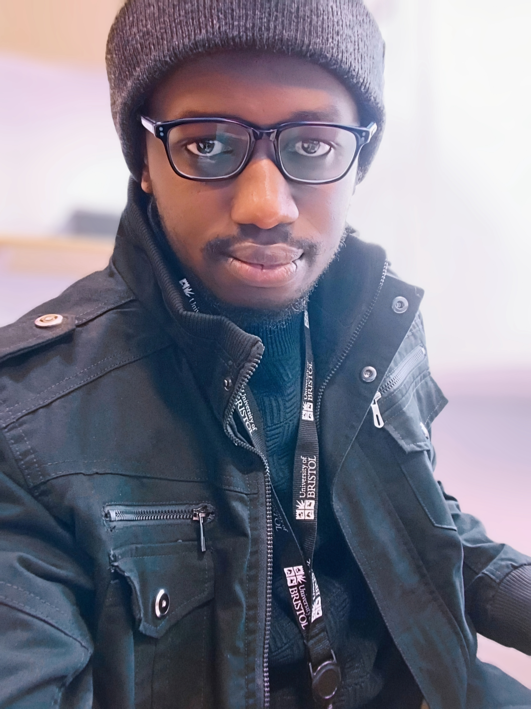
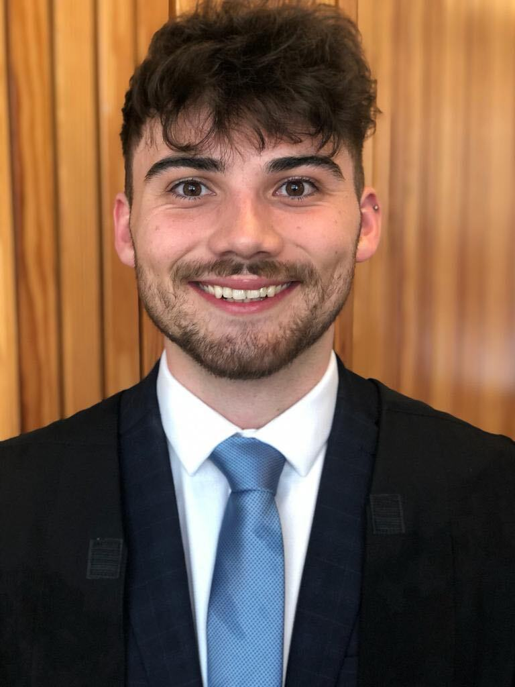
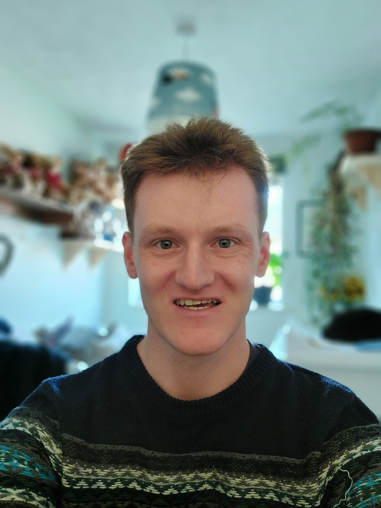
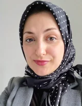
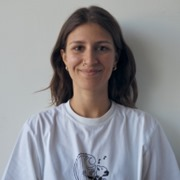
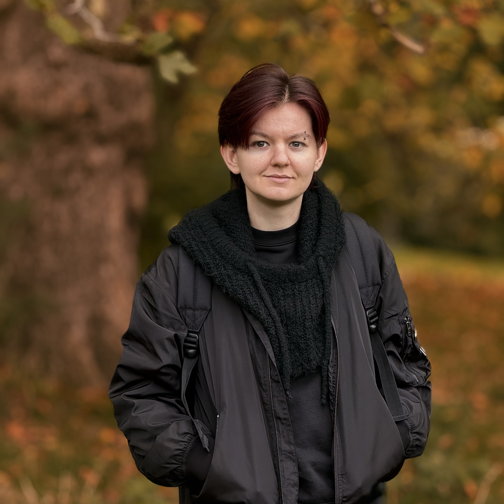

Nic is a Wellcome Trust Investigator, the PI of the Avon Longitudinal Study of Parents and Children and has work package/programme leadership roles in the MRC Integrative Epidemiology Unit, the CRUK Integrative Cancer Epidemiology Programme and the NIHR Bristol Biomedical Research Centre.

Emma is head of the Diabetes and cancer cross disciplinary research group that studies the aetiology of colorectal cancer. We take a cross disciplinary approach to our research; using techniques in genetic epidemiology to guide our laboratory studies. To reflect this, our group sits across both Translational Health Sciences and Population Health Sciences at the University of Bristol.

Kaitlin's research focuses on the application of human genetics to understand the causal relevance of the human gut microbiome in health and disease. Alongside this, Kaitlin is an appointed Lecturer within the Bristol Medical School, responsible for co-directing the MSc in Epidemiology.

Sulaiman Musa
PA to Nic and Team Administrator
Sulaiman is memeber of the MRC-IEU administration team, but is also a critical member of the Timpson lab, keeping everyone, particularly Nic, organized and in check.

Laura is a genetic epidemiologist with a background in quantitative genetics and animal breeding. Her research is now aimed at better understanding how body mass index (BMI) exerts an effect on human health and disease. The main focus of her work is to evaluate the impact of BMI change on the metabolome. She also assists in the omics-data management for the Avon Longitudinal Study of Parents and Children and is integral in mentoring students in the MRC-IEU.

Ahmed is an epidemiologist working on the H2020 LifeCycle and LongITools projects. His research mostly involves using statistical methods to describe cardio-metabolic and musculoskeletal health trajectories and identify their determinants and subsequent effects on health. Current exposures that Ahmed is working on include IVF, puberty timing, physical activity and environmental factors.

David is an evolutionary anthropologist and BBQ aficionado whose research focuses on using population genetic frameworks to understand the processes that shape genetic and phenotypic variation. David is an Associate Professor at Pennington Biomedical Research Center (Louisiana State University) but works closely with the Bristol team, his work directed towards describing the interplay between genomic, microbiomic, and metabolomic variation and how that structure influences health and disease.

Ana is an epidemiologist with expertise in life course epidemiology. Her research aims to understand cardiometabolic consequences of early life adversities. She works in LongITools, a European research project studying the interactions between the environment, lifestyle and health in determining the risks of chronic cardiovascular and metabolic diseases. Her research explores how exposure to air pollution, noise, and built environment can alter cardiometabolic health in adolescence and early adulthood.

Lucy works in the Integrative Cancer Epidemiology Programme (ICEP). She is interested in using Mendelian randomisation and randomised controlled trials to explore the role of circulating proteins in the risk of cancer, in particular, multiple myeloma. She is also part of the analytical team working on the deep phenotyping of long COVID. Lucy's other research interests include studying the effect of body mass index (BMI) on molecular traits. .

Matt is a postdoc in the Biostatistics and Data Integration team at the International Agency for Research on Cancer (World Health Organisation) in Lyon, France. Matt has a background in molecular and cellular biology and completed a PhD in population health sciences in the Timpson/BMI-health group were he retains a formal association. Matt’s work is focussed on integrating multi-omic data in the contexts of different cancers. Passionate about public engagement, Matt runs an art project with creatives and researchers to communicate research.

Vanessa is a cell biologist and clinical epidemiologist working in the Cancer Research UK (CRUK) programme working on the design and undertaking of Recall by Genotype (RbG) studies. RbG studies involve the recruitment of a subset of participants or their biosamples from an existing cohort for more detailed phenotypic analysis. The aim of her work is to understand biological mechanisms underlying cancer risk and progression by undertaking the RbG studies

Ruby Tsang
Senior Research Associate
Ruby is ...

Alec is a CRUK-funded Epidemiology PhD student with a background in biochemistry. His project aims to map variation between the gut microbiome and related 'omic measures, for application to cancer aetiology.

Daniel is an orthoptist and PhD student. His PhD, funded by a GW4 CAT HP Wellcome Doctoral Fellowship , is focussed on the link between common childhood eye disease and major depressive disorder.
Becky is a PhD student with a background in nanogenotoxicology. Her PhD, funded by CRUK, focuses on the role of the human gut microbiome in breast cancer aetiology. Becky’s work involves triangulating findings cross-disciplinarily using genetic and observational epidemiological techniques alongside laboratory analyses.
Marisa is a biochemist with a background in GWAS and Pharmacogenomics, working on the biological mechanisms behind human scarring in the Avon Longitudinal Study of Parents and Children. Whilst based on scarring, her research is focused on the analysis of human genetics in large-scale population studies to identify genetic variants associated with complex human phenotypes to triangulate evidence suitable for testing in biological models.

Maryam is exploring how environmental exposures influence cardiometabolic health. With a background in Air Pollution and Air Quality Consultancy, her research has examined the effects of air pollution on various health-related outcomes, including respiratory, cerebrovascular and ischaemic heart diseases, as well as daily mortality and eye-related conditions. .
Zebenay Workneh Bitew has been a researcher mainly in paediatrics and nutrition at St. Paul's Hospital Millennium Medical College, Addis Ababa, Ethiopia. Several of his studies have been published in reputable international journals. He is currently a PHD candidate at the University of Bristol studying translational health science, with a primary focus on how omics affect human health and disease.

Benny is a PhD student with a background in medical sciences and nutrition. She is on a 4-year MGLE programme funded by the Wellcome Trust. During this time, she will be investigating the role of diet, nutrition and adiposity on colorectal cancer development

Lisa is a PhD student funded by the GW4 BioMed2 MRC doctoral training program. The focus of their PhD is using human genetic data to identify novel protein biomarkers for enhanced prediction and early detection of lung cancer and colorectal cancer.

Amy Dawes
Senior Research Associate
Amy is working alongside Kaitlin on the application of human genetics to understand the causal relevance of the human gut microbiome in health and disease. Amy has a PhD in genetic epidemiology which was focused on identifying gene x environment interactions on BMI and identifying rare variant-BMI associations using whole exome sequencing data.

Oscar is a postdoc at the Inflammation in Tissue Repair and Cancer group with Prof Paul Martin and has a background in zebrafish Developmental Biology and Haematology. Oscar collaborates with Marisa, in the Timpson group, on finding and validating new genes involved in scarring. Oscar uses zebrafish models and live imaging to assess immune cell responses and tissue repair outcomes..